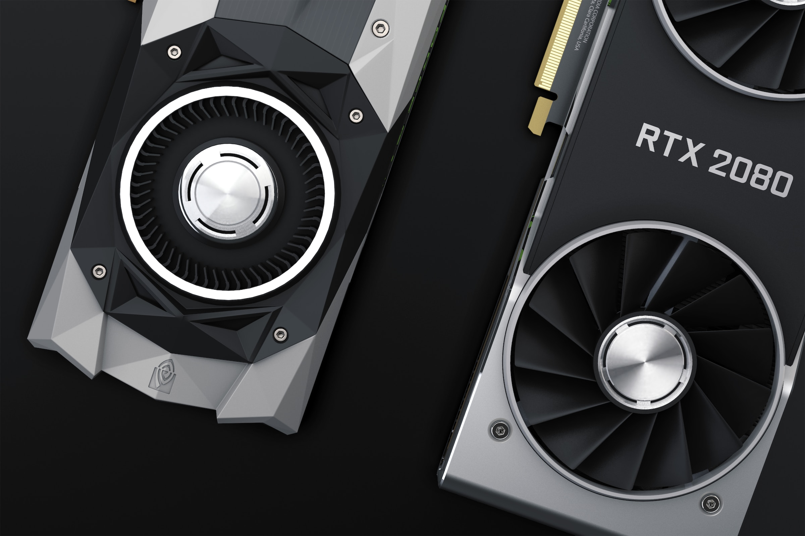

Wprowadzenie
Wybór odpowiednich komponentów do komputera jest kluczowym krokiem w budowie efektywnego i wydajnego systemu. Każda część pełni istotną rolę, a ich harmonijne dopasowanie może zdecydować o ogólnej wydajności i funkcjonalności komputera. Przyjęcie strategicznego podejścia do doboru podzespołów, takich jak procesor, karta graficzna, pamięć RAM czy dysk SSD, pozwala dostosować system do konkretnych zastosowań, od gier po profesjonalne zadania graficzne czy programowanie. W tym kontekście, zrozumienie kluczowych parametrów i technologii związanych z poszczególnymi komponentami staje się kluczowe, aby osiągnąć optymalną wydajność i zadowalające rezultaty. W dalszej części omówimy istotne aspekty, na które warto zwrócić uwagę podczas doboru części do komputera.
Karta graficzna
Karta graficzna to kluczowy element komputera odpowiedzialny za przetwarzanie i renderowanie obrazu. Jej rdzenie CUDA (NVIDIA) lub Stream Processors (AMD) odpowiadają za wydajność obliczeniową, decydując o płynności gier i efektywności w zastosowaniach graficznych. Pamięć VRAM wpływa na obsługę dużych projektów graficznych oraz wydajność w grach w wysokich rozdzielczościach. Szybkość taktowania GPU determinuje, jak szybko karta może wykonywać operacje. Technologie takie jak Ray Tracing i DLSS (NVIDIA) podnoszą realizm grafiki w grach. Kompatybilność z technologią FreeSync/G-Sync eliminuje zacinanie obrazu. Złącza wyjściowe, zużycie energii, a także rozmiar i chłodzenie są istotne przy wyborze, dostosowując kartę do konkretnych potrzeb użytkownika oraz specyfikacji systemu.

Na co zwrócić uwagę?
Proces technologiczny
Oznacza, ile nanometrów wynosi technologia produkcji GPU. Im mniejszy ten parametr, tym bardziej efektywna i wydajna jest karta graficzna.
Ilość rdzeni CUDA / Stream Processors
Liczba rdzeni obliczeniowych wpływa na ogólną wydajność karty. Więcej rdzeni zazwyczaj oznacza lepszą wydajność w zadaniach obliczeniowych.
Pamięć VRAM
Duża ilość pamięci VRAM jest ważna przy pracy z dużymi teksturami, modelami 3D i wysokimi rozdzielczościami. W przypadku gier, zwłaszcza w rozdzielczości 4K, zaleca się kartę z co najmniej 8 GB VRAM.
Rodzaj pamięci
GDDR6 jest obecnie jednym z najnowszych standardów i oferuje wyższą przepustowość niż wcześniejsze wersje, takie jak GDDR5
Szybkość taktowania
Oznacza, jak szybko pracuje GPU. Wyższe taktowanie zazwyczaj przekłada się na lepszą wydajność, ale nie jest jedynym kluczowym czynnikiem.
Technologie Ray Tracing i DLSS (NVIDIA)
Technologia śledzenia promieni (ray tracing) pozwala na bardziej realistyczne efekty świetlne w grach.
Deep Learning Super Sampling (DLSS) to technologia, która wykorzystuje sztuczną inteligencję do poprawy jakości obrazu przy mniejszym obciążeniu GPU.
Zużycie energii i zasilanie
Sprawdź, czy zasilacz w twoim systemie spełnia wymagania karty graficznej pod względem mocy i złącz zasilających.
Rozmiar i chłodzenie
Upewnij się, że karta mieści się w obudowie komputera.
Dobre chłodzenie jest kluczowe dla utrzymania niskich temperatur podczas intensywnego obciążenia.
Generacja PCIe:
Sprawdź, czy karta obsługuje daną generację PCIe (np. PCIe 3.0, PCIe 4.0). Wybierając nowoczesną kartę, warto korzystać z najnowszej generacji dla zwiększenia przepustowości.
Opinie i recenzje
Przed zakupem karty graficznej zaleca się gruntowne zbadanie opinii i recenzji, a także analizę różnorodnych benchmarków. Oceny użytkowników oraz ekspertów pomagają w zrozumieniu rzeczywistego doświadczenia z produktu, podczas gdy benchmarki dostarczają obiektywnych danych dotyczących wydajności. Ten holistyczny proces pozwala na dokładne zrozumienie, czy dana karta spełni oczekiwania, zarówno pod kątem gier, jak i profesjonalnych zastosowań graficznych, i zapewnia pewność co do ostatecznego wyboru.
Procesor

Procesor, nazywany mózgiem komputera, pełni kluczową rolę w przetwarzaniu danych. Jego moc obliczeniowa, wyrażona w ilości rdzeni i wątków, wpływa na płynność działania systemu. Producenci oferują różne linie procesorów, np. Intel i AMD, które są dostosowane do różnych zastosowań. Procesory o wyższej częstotliwości zegara sprawdzają się w grach, podczas gdy modele wielordzeniowe są skuteczne w zadaniach wielowątkowych, takich jak renderowanie grafiki 3D czy kompilacje programów. Przy wyborze procesora warto także zwrócić uwagę na architekturę, pamięć cache oraz kompatybilność z płytą główną.
Na co zwrócić uwagę?
Liczba Rdzeni i Wątków:
Im więcej rdzeni i wątków, tym lepsza wydajność w zadaniach wielozadaniowych i wielowątkowych. Procesory wielordzeniowe są korzystne przy renderowaniu, kompilacji kodu czy obróbce grafiki.
Częstotliwość Zegara:
Wyższa częstotliwość zegara przekłada się na szybsze wykonywanie pojedynczych zadań. To istotne w grach i zadaniach, które korzystają z pojedynczego wątku.
Pamięć Cache:
Większa pamięć cache przyspiesza dostęp do danych, co ma znaczenie dla ogólnej wydajności procesora. L2 i L3 cache są szczególnie ważne.
TDP (Thermal Design Power):
Oznacza ilość energii, jaką procesor generuje podczas pełnej pracy. Wybieraj procesory o odpowiednim TDP, aby uniknąć problemów z chłodzeniem.
Kompatybilność z Płytą Główną:
Upewnij się, że procesor jest zgodny z płytą główną. Nowe procesory mogą wymagać aktualizacji BIOS-u.
Architektura:
Nowoczesne architektury, takie jak Zen od AMD czy Core od Intel, wprowadzają poprawki w efektywności energetycznej i ogólnej wydajności.
Zastosowanie:
Wybierz procesor odpowiedni do planowanych zastosowań. Procesory gamingowe różnią się od tych dedykowanych do profesjonalnych zastosowań graficznych czy programowania.
Technologie Dodatkowe:
Sprawdź, czy procesor obsługuje nowoczesne technologie, takie jak Hyper-Threading, SMT (Symmetrical Multi-Threading), czy AMD Ryzen Master.
GPU Zintegrowane (w przypadku APU):
W przypadku procesorów z zintegrowanym układem graficznym (APU), zwróć uwagę na wydajność GPU, jeśli nie planujesz korzystać z karty dedykowanej.
Opinie i Recenzje:
Przed zakupem procesora zaleca się nie tylko opinię użytkowników, ale także sprawdzenie wyników benchmarków. Analiza testów wydajności, porównań z innymi modelami oraz recenzji zawierających konkretne dane pozwoli uzyskać kompleksowe i obiektywne spojrzenie na potencjalne osiągnięcia danego procesora. Dzięki temu możesz dokładnie ocenić, czy dany model spełnia Twoje oczekiwania pod względem wydajności w różnych zastosowaniach, od gier po zadania profesjonalne.
Krótki podział procesorów
1. Procesory Entry-Level (np. Intel Core i3, Ryzen 3):
Zastosowanie ogólne: Doskonałe do codziennych zadań, przeglądania internetu, obsługi multimediów.
Praca biurowa: Skorzystaj z tych procesorów do standardowych zadań biurowych.
2. Procesory Średniej Klasy (np. Intel Core i5, Ryzen 5):
Zastosowanie ogólne: Odpowiednie do pracy biurowej, multitaskingu i lekkich zastosowań graficznych.
Gaming: Zapewniają dobrą wydajność w grach, szczególnie przy rozdzielczościach do 1080p.
3. Procesory Wyższej Klasy (np. Intel Core i7/i9, Ryzen 7/9):
Zastosowanie ogólne: Odpowiednie do zaawansowanej pracy biurowej, edycji multimediów, programowania i gier.
Gaming: Zapewniają doskonałą wydajność w grach, zwłaszcza w rozdzielczościach 1440p i 4K.
Przy zastosowaniach profesjonalnych: Nadają się do profesjonalnych zastosowań graficznych, takich jak obróbka wideo czy renderowanie grafiki 3D.
4. Procesory Wielordzeniowe / Threadripper (np. Ryzen Threadripper):
Zastosowania profesjonalne: Idealne do profesjonalnego renderowania grafiki, przetwarzania wideo, pracy z dużymi zestawami danych.
Zadania wielowątkowe: Zapewniają doskonałą wydajność w zadaniach, które korzystają z wielu rdzeni i wątków.
Tworzenie i edycja treści: Nadają się do zaawansowanych zastosowań w dziedzinie kreatywności i produkcji treści.
Chłodzenie procesora
Podczas doboru chłodzenia do procesora warto wziąć pod uwagę kilka kluczowych czynników, a wybór między chłodzeniem wodnym a powietrznym zależy od indywidualnych preferencji, potrzeb oraz budżetu.
Na co zwrócić uwagę?
Proces technologiczny
Oznacza, ile nanometrów wynosi technologia produkcji GPU. Im mniejszy ten parametr, tym bardziej efektywna i wydajna jest karta graficzna.
Ilość rdzeni CUDA / Stream Processors
Liczba rdzeni obliczeniowych wpływa na ogólną wydajność karty. Więcej rdzeni zazwyczaj oznacza lepszą wydajność w zadaniach obliczeniowych.
Pamięć VRAM
Duża ilość pamięci VRAM jest ważna przy pracy z dużymi teksturami, modelami 3D i wysokimi rozdzielczościami. W przypadku gier, zwłaszcza w rozdzielczości 4K, zaleca się kartę z co najmniej 8 GB VRAM.
Rodzaj pamięci
GDDR6 jest obecnie jednym z najnowszych standardów i oferuje wyższą przepustowość niż wcześniejsze wersje, takie jak GDDR5
Szybkość taktowania
Oznacza, jak szybko pracuje GPU. Wyższe taktowanie zazwyczaj przekłada się na lepszą wydajność, ale nie jest jedynym kluczowym czynnikiem.
Technologie Ray Tracing i DLSS (NVIDIA)
Technologia śledzenia promieni (ray tracing) pozwala na bardziej realistyczne efekty świetlne w grach.
Deep Learning Super Sampling (DLSS) to technologia, która wykorzystuje sztuczną inteligencję do poprawy jakości obrazu przy mniejszym obciążeniu GPU.
Zużycie energii i zasilanie
Sprawdź, czy zasilacz w twoim systemie spełnia wymagania karty graficznej pod względem mocy i złącz zasilających.
Rozmiar i chłodzenie
Upewnij się, że karta mieści się w obudowie komputera.
Dobre chłodzenie jest kluczowe dla utrzymania niskich temperatur podczas intensywnego obciążenia.
Generacja PCIe:
Sprawdź, czy karta obsługuje daną generację PCIe (np. PCIe 3.0, PCIe 4.0). Wybierając nowoczesną kartę, warto korzystać z najnowszej generacji dla zwiększenia przepustowości.
Opinie i recenzje
Przed zakupem karty graficznej zaleca się gruntowne zbadanie opinii i recenzji, a także analizę różnorodnych benchmarków. Oceny użytkowników oraz ekspertów pomagają w zrozumieniu rzeczywistego doświadczenia z produktu, podczas gdy benchmarki dostarczają obiektywnych danych dotyczących wydajności. Ten holistyczny proces pozwala na dokładne zrozumienie, czy dana karta spełni oczekiwania, zarówno pod kątem gier, jak i profesjonalnych zastosowań graficznych, i zapewnia pewność co do ostatecznego wyboru.